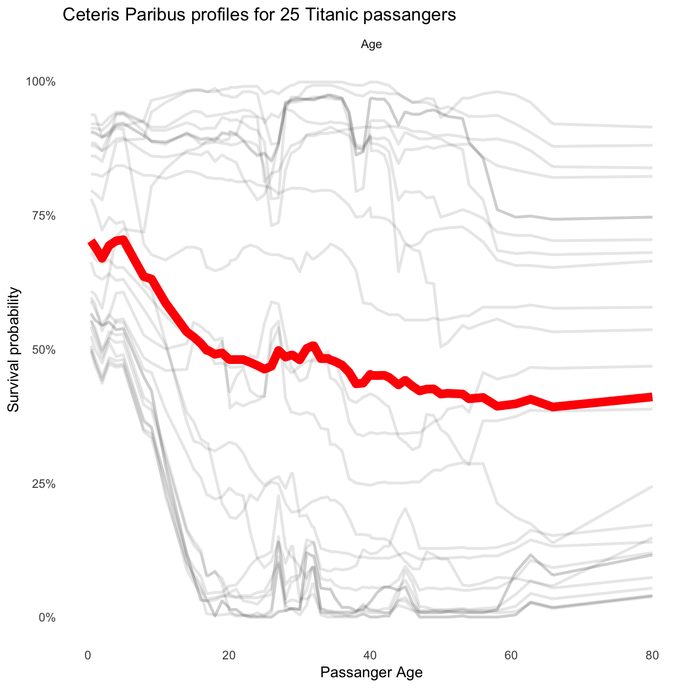
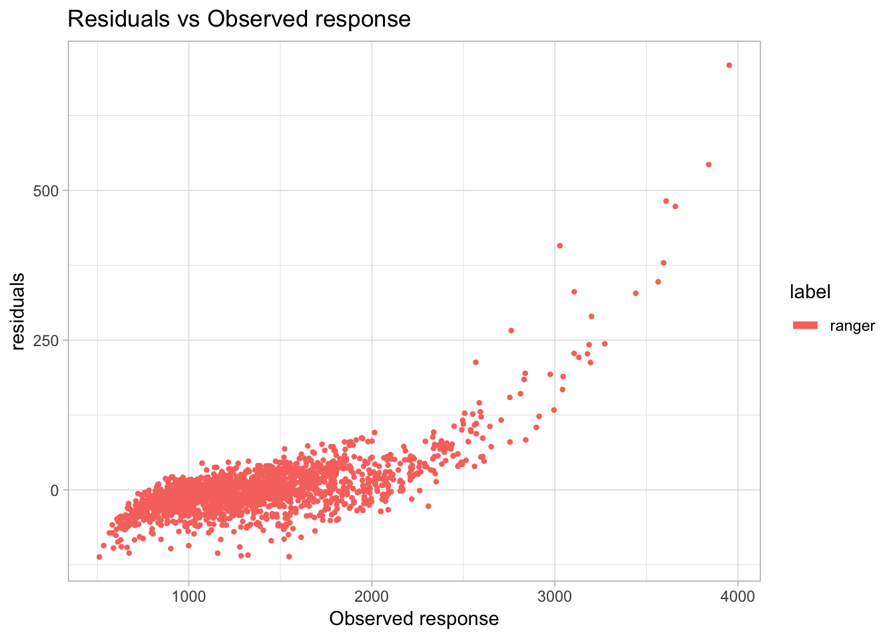
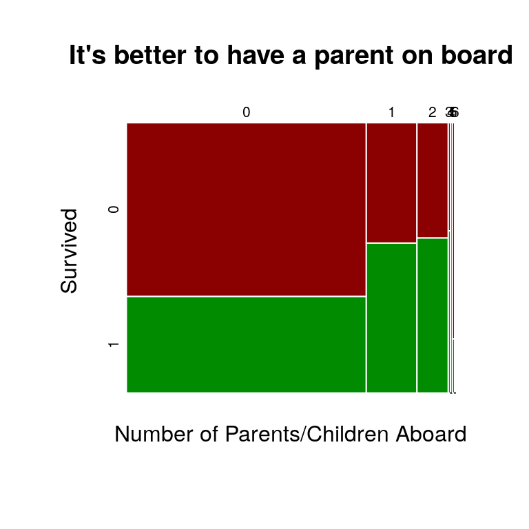
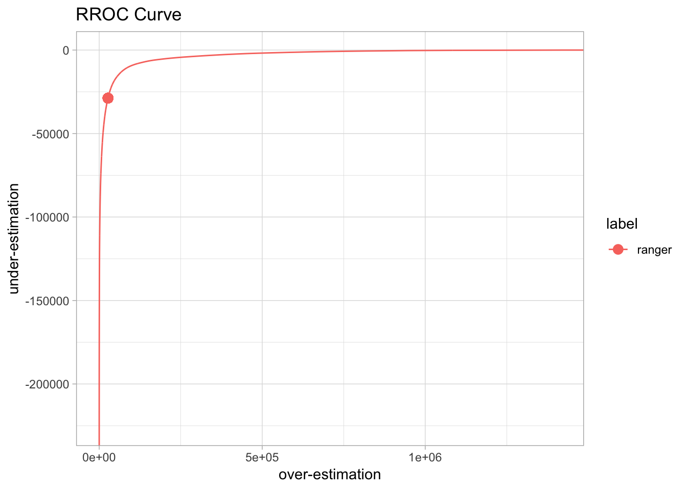
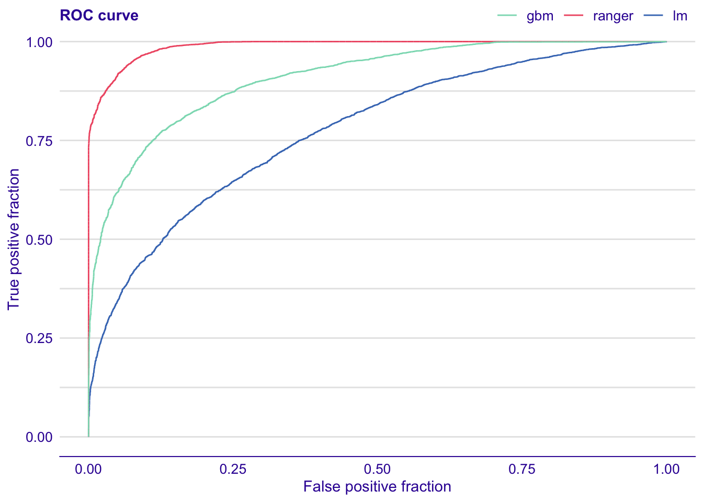

Chapter 2 Data Sets
We illustrate techniques introduced in this book on three datasets:
- Sinking of the RMS Titanic as an example of binary classification
- Apartment prices as an example of regression model
- Hire or Fire as an example of multi-class classification and interactions
2.1 Sinking of the RMS Titanic

Titanic sinking by Willy Stöwer
Sinking of the RMS Titanic is one of the deadliest maritime disasters in history (during peacetime). Over 1500 people died as a consequence of collision with an iceberg. Thanks to projects like Encyclopedia titanica https://www.encyclopedia-titanica.org/ we have a very rich and precise data about passengers. This dataset is available in the stablelearner package. After some variable transformation it is also avaliable in the DALEX package.
## gender age class embarked country fare sibsp parch survived
## 1 male 42 3rd Southampton United States 7.11 0 0 no
## 2 male 13 3rd Southampton United States 20.05 0 2 no2.1.1 Data cleaning
Feature of interest is the binary variable survived. Let’s build some predictive models for this variable.
First we need to do some data preprocessing. Columns with missing data are filled up
# missing country is replaced by "X"
titanic$country[is.na(titanic$country)] = "X"
# missing age is replaced by average (30)
titanic$age[is.na(titanic$age)] = 30
# missing fare, sibsp, parch are replaced by 0
titanic$fare[is.na(titanic$fare)] = 0
titanic$sibsp[is.na(titanic$sibsp)] = 0
titanic$parch[is.na(titanic$parch)] = 02.1.2 Data exploration
It is always a good idea to do data exploration before modelling. But since this book is focused on model exploration we will spend only a few lines on data exploration part. And we will limit ourselves to two-variable summaries for each variable.




2.1.3 Logistic regression is always a good choice
The feature of interest survival is binary, thus a natural choice is a logistic regression. Most of predictive features are categorical except age.
There is no reason to expect a linear relation between age and odds of survival, thus for age we will use linear tail-restricted cubic splines available in the rcs() function in the rms package (Harrell Jr 2018).
library("rms")
titanic_lmr_v6 <- lrm(survived == "yes" ~ gender + rcs(age) + class + sibsp +
parch + fare + embarked, titanic)
titanic_lmr_v6## Logistic Regression Model
##
## lrm(formula = survived == "yes" ~ gender + rcs(age) + class +
## sibsp + parch + fare + embarked, data = titanic)
##
## Model Likelihood Discrimination Rank Discrim.
## Ratio Test Indexes Indexes
## Obs 2207 LR chi2 752.73 R2 0.404 C 0.817
## FALSE 1496 d.f. 17 g 1.648 Dxy 0.635
## TRUE 711 Pr(> chi2) <0.0001 gr 5.195 gamma 0.636
## max |deriv| 0.0001 gp 0.282 tau-a 0.277
## Brier 0.146
##
## Coef S.E. Wald Z Pr(>|Z|)
## Intercept 4.5458 0.5460 8.33 <0.0001
## gender=male -2.7658 0.1587 -17.43 <0.0001
## age -0.1186 0.0221 -5.37 <0.0001
## age' 0.6339 0.1629 3.89 <0.0001
## age'' -2.6621 0.7841 -3.39 0.0007
## age''' 2.8936 1.0131 2.86 0.0043
## class=2nd -1.1029 0.2486 -4.44 <0.0001
## class=3rd -2.0185 0.2466 -8.18 <0.0001
## class=deck crew 1.1067 0.3468 3.19 0.0014
## class=engineering crew -0.9287 0.2615 -3.55 0.0004
## class=restaurant staff -3.1278 0.6571 -4.76 <0.0001
## class=victualling crew -1.0473 0.2558 -4.09 <0.0001
## sibsp -0.4574 0.1012 -4.52 <0.0001
## parch -0.0970 0.0992 -0.98 0.3282
## fare 0.0021 0.0020 1.05 0.2928
## embarked=Cherbourg 0.7725 0.2844 2.72 0.0066
## embarked=Queenstown 0.2653 0.3411 0.78 0.4368
## embarked=Southampton 0.2287 0.2119 1.08 0.2805
## 2.1.4 Random Forest to the rescue
In addition to a logistic regression we will use a random forest model with default settings. Random forest is known for good performance, is able to grasp low-level variable interactions and is quite stable.
Here we are using the randomForest package (Liaw and Wiener 2002).
library("randomForest")
titanic_rf_v6 <- randomForest(survived ~ class + gender + age + sibsp +
parch + fare + embarked,
data = titanic)
titanic_rf_v6##
## Call:
## randomForest(formula = survived ~ class + gender + age + sibsp + parch + fare + embarked, data = titanic)
## Type of random forest: classification
## Number of trees: 500
## No. of variables tried at each split: 2
##
## OOB estimate of error rate: 18.58%
## Confusion matrix:
## no yes class.error
## no 1396 100 0.06684492
## yes 310 401 0.43600563And a smaller model
##
## Call:
## randomForest(formula = survived ~ class + gender + age, data = titanic)
## Type of random forest: classification
## Number of trees: 500
## No. of variables tried at each split: 1
##
## OOB estimate of error rate: 20.71%
## Confusion matrix:
## no yes class.error
## no 1353 143 0.09558824
## yes 314 397 0.441631502.1.5 Gradient boosting for interactions
Last model that we will train on this dataset is the gradient boosting model. This family of models is known for being able to grasp deep interactions between variables.
Here we are using the implementation from the gbm package (Ridgeway 2017).
library("gbm")
titanic_gbm_v6 <- gbm(survived == "yes" ~ class + gender + age + sibsp +
parch + fare + embarked, data = titanic, n.trees = 15000)## Distribution not specified, assuming bernoulli ...## gbm(formula = survived == "yes" ~ class + gender + age + sibsp +
## parch + fare + embarked, data = titanic, n.trees = 15000)
## A gradient boosted model with bernoulli loss function.
## 15000 iterations were performed.
## There were 7 predictors of which 7 had non-zero influence.2.1.6 Model predictions
Having all three models let’s see what are odds of surviving for a 2-years old boy that travels in the 3rd class with 1 parent and 3 siblings.
henry <- data.frame(
class = factor("2nd", levels = c("1st", "2nd", "3rd", "deck crew", "engineering crew", "restaurant staff", "victualling crew")),
gender = factor("male", levels = c("female", "male")),
age = 8,
sibsp = 0,
parch = 0,
fare = 72,
embarked = factor("Belfast", levels = c("Belfast","Cherbourg","Queenstown","Southampton"))
)Logistic regression model says 47% for survival.
## 1
## 0.4702145Random forest model says 39% for survival.
## no yes
## 1 0.656 0.344
## attr(,"class")
## [1] "matrix" "votes"Gradient boosting model says 43.6% for survival.
## [1] 0.4322263Three different opinions. Which one should we trust? Tools introduced in following sections will help to understand how these models are different.
2.2 Apartment Prices

Warsaw skyscrapers by Artur Malinowski Flicker
Predicting house prices is a common regression problem for machine learning. Various datasets for house prices are available at websites like Kaggle or UCI Machine Learning Repository.
In this book we will work with a very interesting version of this problem. The apartments dataset is an artificial dataset created to match key characteristics of real apartments in Warsaw. But the dataset is created in a way that two very different models, namely linear regression and random forest, have almost exactly the same accuracy.
Which one we should chose? Based on this dataset we show that visual explainers give a better understanding of key model characteristics and are very helpful in the model selection.
The dataset is available in the DALEX package (Biecek 2018b). Each row corresponds to a single apartment. Features like surface, number of rooms, district or floor are used as predictive features. The problem here is to predict price per a square meter for an apartment, so it’s a regression problem with continuous target.
## m2.price construction.year surface floor no.rooms district
## 1 5897 1953 25 3 1 Srodmiescie
## 2 1818 1992 143 9 5 Bielany## m2.price construction.year surface floor no.rooms district
## 1001 4644 1976 131 3 5 Srodmiescie
## 1002 3082 1978 112 9 4 Mokotow2.2.1 A tale of two models
Feature of interest is the variable m2.price, it’s a price (EUR) for a square meter of an apartment.
Let’s build two predictive models for this variable.
For the champion we will use a linear model. Easy to train, easy to test, easy to understand.
apartments_lm_v5 <- lm(m2.price ~ ., data = apartments)
predicted_apartments_lm <- predict(apartments_lm_v5, apartments_test)
rmsd_lm <- sqrt(mean((predicted_apartments_lm - apartments_test$m2.price)^2))
rmsd_lm## [1] 283.0865The root mean square difference for linear model calculated on test data is 283.1.
Now, let’s train a challenger - a random forest model from randomForest package (Breiman et al. 2018). Elastic, popular, able to handle non linear relations.
library("randomForest")
set.seed(72)
apartments_rf_v5 <- randomForest(m2.price ~ ., data = apartments)
predicted_apartments_rf <- predict(apartments_rf_v5, apartments_test)
rmsd_rf <- sqrt(mean((predicted_apartments_rf - apartments_test$m2.price)^2))
rmsd_rf## [1] 282.9519The root mean square difference for random forest is 283.
The challenger is better in terms of RMSD, but the difference between accuracies is smaller than 10 cents. Shall we choose the model complex but elastic model or the linear model?
2.3 Hire or Fire
In this chapter we present an artificial dataset from Human Resources department in a Call Center.
The dataset is available in the DALEX package (Biecek 2018b). Each row corresponds to a single employee in a call center. Features like gender, age, average number of working hours per week, grade from the last evaluation and level of salary are used as predictive features.
The goal here is to first build a model, that will guess when to fire and when to promote an employer, so it’s a classification problem with three classes.
Why we need such model? We want to have objective decisions. That will not be subject to personal preferences of a manager. But is it possible to have an objective model? Would it be fair or it will just replicate some unfairness?
We will use this example to show how to use prediction level explainers to better understand how the model works for selected cases.
## gender age hours evaluation salary status
## 1 male 32.58267 41.88626 3 1 fired
## 2 female 41.21104 36.34339 2 5 fired
## 3 male 37.70516 36.81718 3 0 fired
## 4 female 30.06051 38.96032 3 2 fired
## 5 male 21.10283 62.15464 5 3 promoted
## 6 male 40.11812 69.53973 2 0 firedIn this book we are focused on model exploration rather than model building, thus for sake ok simplicity we will use two default models created with random forest (Breiman et al. 2018) and generalized linear model (Ripley 2016).
set.seed(59)
library("randomForest")
HR_rf_v5 <- randomForest(status ~ gender + age + hours + evaluation + salary, data = HR)
library("nnet")
HR_glm_v5 <- multinom(status ~ gender + age + hours + evaluation + salary, data = HR)## # weights: 21 (12 variable)
## initial value 8620.810629
## iter 10 value 7002.127738
## iter 20 value 6239.478146
## iter 20 value 6239.478126
## iter 20 value 6239.478124
## final value 6239.478124
## converged2.4 List of Models
In previous sections we build a collection of predictive models for dataset about Sinking of RMS Titanic, apartment prices and Human Resources data. These models will be used in next chapters.
The table below summarizes all these models. You can download the binary object with the attached archivist hooks (Biecek and Kosinski 2017).
| Model name | Model generator | Dataset | Variables | Link to the model |
|---|---|---|---|---|
titanic_lmr_v6 |
rms:: lmr |
DALEX:: titanic |
gender, age, class, sibsp, parch, fare, embarked | archivist:: aread("pbiecek/models/f285c") |
titanic_rf_v6 |
randomForest:: randomForest |
DALEX:: titanic |
gender, age, class, sibsp, parch, fare, embarked | archivist:: aread("pbiecek/models/92753") |
titanic_rf_v3 |
randomForest:: randomForest |
DALEX:: titanic |
gender, age, class | archivist:: aread("pbiecek/models/bcd20") |
titanic_gbm_v6 |
gbm:: gbm |
DALEX:: titanic |
gender, age, class, sibsp, parch, fare, embarked | archivist:: aread("pbiecek/models/2bdad") |
apartments_lm_v5 |
stats:: lm |
DALEX:: apartments |
construction .year, surface, floor, no.rooms, district | archivist:: aread("pbiecek/models/55f19") |
apartments_rf_v5 |
randomForest:: randomForest |
DALEX:: apartments |
construction .year, surface, floor, no.rooms, district | archivist:: aread("pbiecek/models/fe7a5") |
HR_rf_v5 |
randomForest:: randomForest |
DALEX:: HR |
gender, age, hours, evaluation, salary | archivist:: aread("pbiecek/models/1ecfd") |
HR_glm_v5 |
stats:: glm |
DALEX:: HR |
gender, age, hours, evaluation, salary | archivist:: aread("pbiecek/models/f0244") |
References
Harrell Jr, Frank E. 2018. Rms: Regression Modeling Strategies. https://CRAN.R-project.org/package=rms.
Liaw, Andy, and Matthew Wiener. 2002. “Classification and Regression by randomForest.” R News 2 (3): 18–22. https://CRAN.R-project.org/doc/Rnews/.
Ridgeway, Greg. 2017. Gbm: Generalized Boosted Regression Models. https://CRAN.R-project.org/package=gbm.
Biecek, Przemyslaw. 2018b. DALEX: Descriptive mAchine Learning Explanations. https://pbiecek.github.io/DALEX/.
Breiman, Leo, Adele Cutler, Andy Liaw, and Matthew Wiener. 2018. RandomForest: Breiman and Cutler’s Random Forests for Classification and Regression. https://CRAN.R-project.org/package=randomForest.
Ripley, Brian. 2016. Nnet: Feed-Forward Neural Networks and Multinomial Log-Linear Models. https://CRAN.R-project.org/package=nnet.
Biecek, Przemyslaw, and Marcin Kosinski. 2017. “archivist: An R Package for Managing, Recording and Restoring Data Analysis Results.” Journal of Statistical Software 82 (11): 1–28. https://doi.org/10.18637/jss.v082.i11.